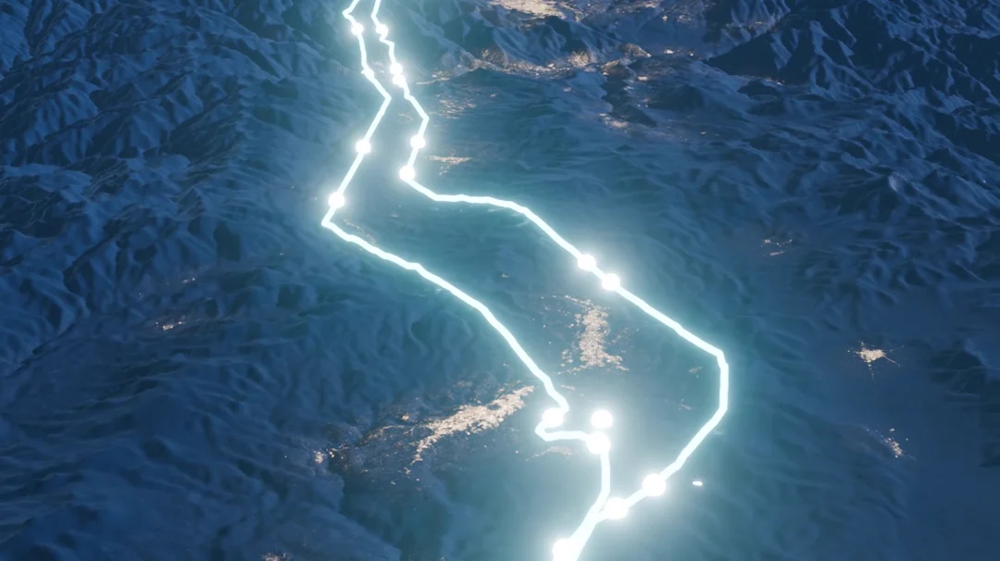
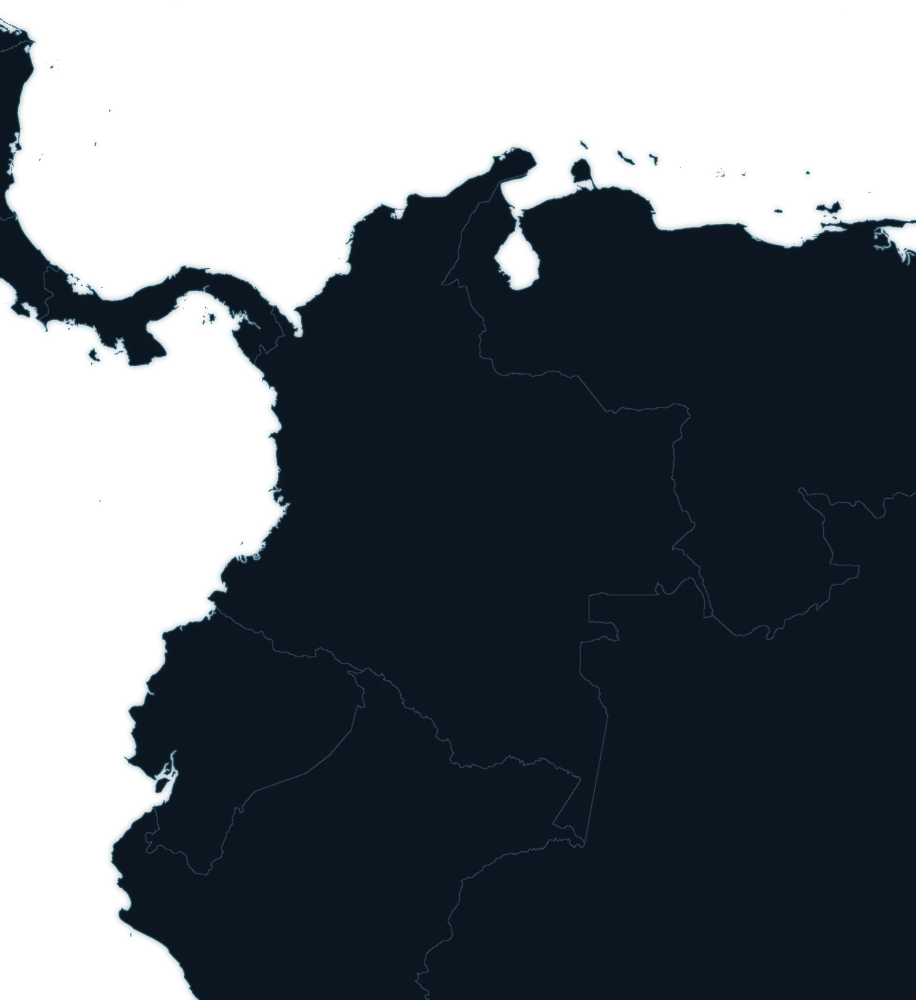
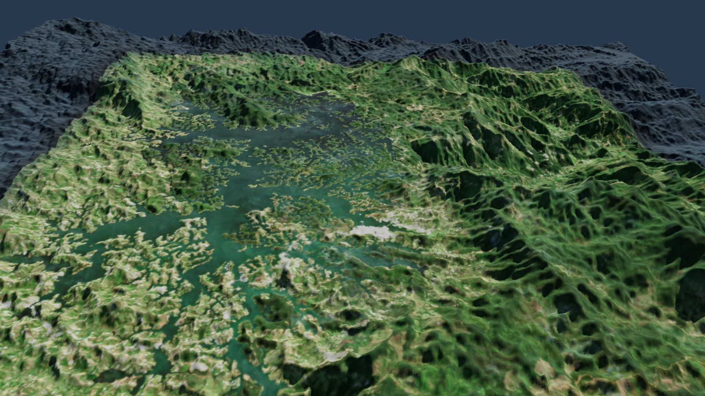

Capítulo 03 Interconexiones eléctricas
La red que cruza fronteras.
Sigue los intercambios de electricidad y explora los corredores que conectan a Colombia con sus vecinos.
Empezar el recorridoCordillera andina · Render de Blender
XM · Flujos físicos
El pulso de 2024.
Explora cómo cambiaron los intercambios eléctricos en los meses de la crisis de Ecuador. Las series corresponden al sistema colombiano.
Intercambios internacionales
Cargando datos…
Norte de Sudamérica y Centroamérica
Los cables de la frontera.
Elige un corredor para ubicarlo y consultar qué representa.

Jamondino–Pomasqui
Corredor Colombia–Ecuador documentado a 230 kV. El límite de transferencia cambia con las condiciones operativas.
Consultar fuenteTrazos verdes cartográficos de © OpenStreetMap contributors. El trazo punteado señala el corredor de forma esquemática.
Ecuador · 2024
Cuando faltó el agua.
El informe anual del operador ecuatoriano vincula los racionamientos de 2024 con el déficit hidroeléctrico y los bajos niveles de los embalses.
Informe anual de CENACE Cronología del Banco Central del EcuadorDatos y video

Volver al primer capítuloEl Niño y la luz.